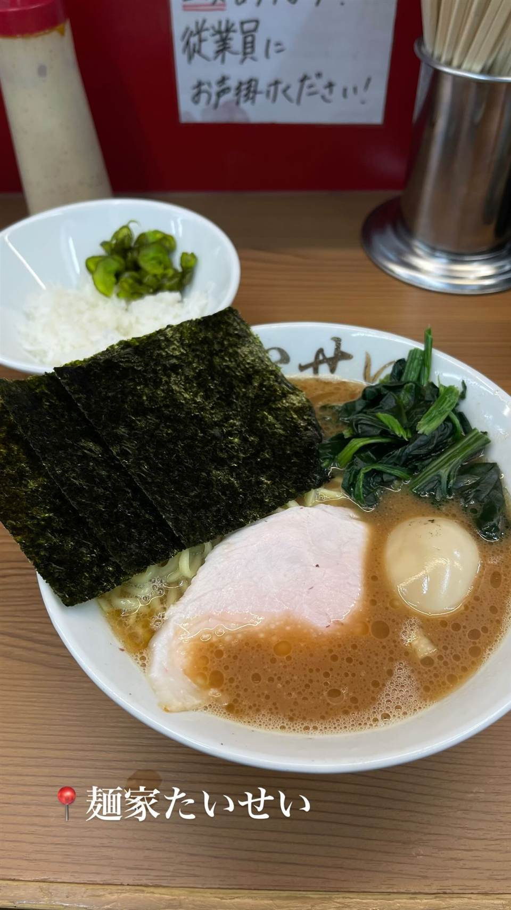
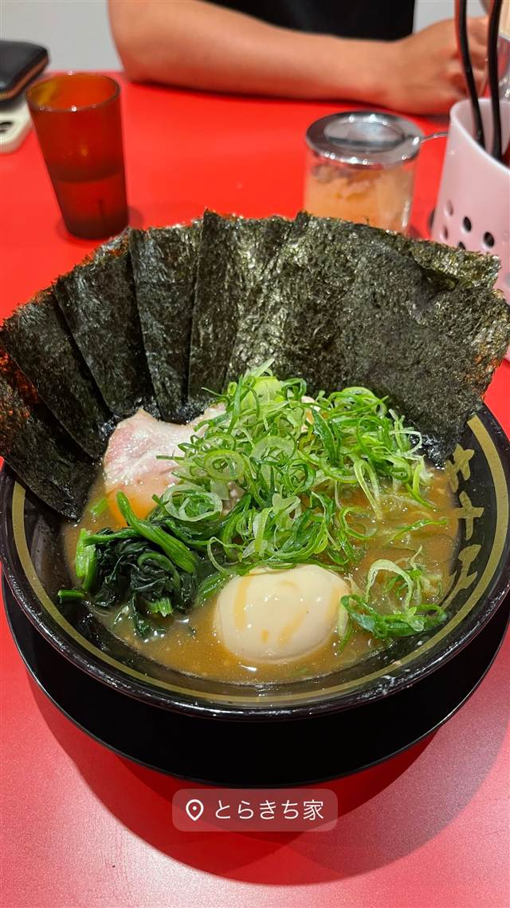

厚木家
家系総本山「吉村家」創業者の実子が営む直系の一杯
厚木家
家系ラーメンの原点「吉村家」の創業者を父に持つ実子が営む直系店。本厚木で伝統の豚骨醤油スープを受け継ぎ、家系ファンから高い評価を得ている。
TRIVIA
へえ、という話
- 店主は家系ラーメンの生みの親・吉村家創業者の実の息子
- 家系総本山「吉村家」の実子が営む数少ない直系店の一つ
| 創業 | 2005年11月開店 |
|---|---|
| 系譜 | 家系ラーメンの総本山「吉村家」の直系店 |
| 看板 | チャーシューメン、ラーメン |
| こだわり | 家系の伝統的な豚骨醤油スープで、麺の固さ・味の濃さ・脂の量を注文時に選べる |
| 掲載・受賞 | ラーメンデータベースで家系ラーメン中トップクラスの評価を獲得 |
| 予算 | 昼 ～¥999 夜 ～¥999 |
| 定休日 | 日曜日 |
| 場所 | 本厚木駅 神奈川県厚木市 |
| 注意 | 家系ラーメンの実子直系店として神奈川県央エリアを代表する存在 |
食べたもの：家系ラーメン
NEARBY
近い店・同じ系統の店
-
 ★
家系 巣鴨駅
こいけのいえけい
小池グループ初の家系専門店、元は人気の裏メニュー
昼 ～¥999 夜 ～¥999
★
家系 巣鴨駅
こいけのいえけい
小池グループ初の家系専門店、元は人気の裏メニュー
昼 ～¥999 夜 ～¥999
-
 ★
家系 末広町駅
王道家直系 IEKEI TOKYO
家系四天王「王道家」の直系、東京店だけの自家製麺
★
家系 末広町駅
王道家直系 IEKEI TOKYO
家系四天王「王道家」の直系、東京店だけの自家製麺
-

★ 家系 中野坂上駅 麺家 たいせい 「武道家龍」で4代目店長を務めた店主の家系ラーメン 昼 ～¥999 夜 ～¥999 -

家系 東白楽駅 家系ラーメン とらきち家(現:とらきち家 光) 屋号は継いだ二代目店主の名にちなむ家系ラーメン 夜 ¥1,000～¥1,999 -
 家系 白楽駅
ラーメン 末廣家
吉村家直系、吊るし焼きチャーシューが看板の家系
夜 ～¥999
家系 白楽駅
ラーメン 末廣家
吉村家直系、吊るし焼きチャーシューが看板の家系
夜 ～¥999
-
 家系 鷺沼
濱辰家
豚骨と鶏骨を10時間以上炊いた鶏油香るまろやか家系
夜 ¥1,000～¥1,999
家系 鷺沼
濱辰家
豚骨と鶏骨を10時間以上炊いた鶏油香るまろやか家系
夜 ¥1,000～¥1,999